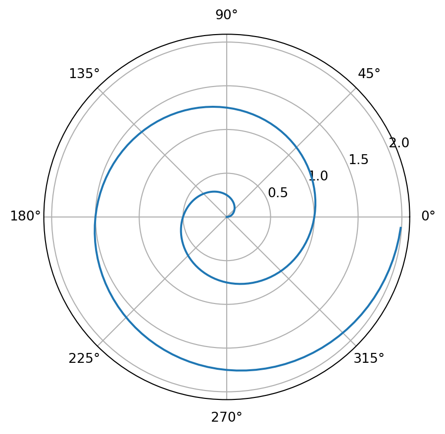

![]()

Markdown, Pandoc and Quarto
a modern ecosystem for typesetting and publishing
Why Markdown?
- The two main approaches to generating documents (reports, slides, etc) are Office suites (MS, Google, Libre…) and LaTeX.
Office
Pros:
- WYSIWYG
- Collaboration (review mode, google doc)
Cons:
- Version conflicts.
- Reproducibility.
- Math equations and bibliography are not great.
LaTeX
Pros:
- Beautiful documents (but not beamer slides).
- Reproducibility.
Cons:
- Horrible markup language.
- Compilation is slow.
- Only outputs pdf (no video in your slides).
- Both are additionally not great at generating html \rightarrow third ecosystem.
1 - Markdown
Basic Markdown syntax
- Markdown is a markup language (as html, tex, wiki, rst…) initially developed to write basic documents (e.g. README files or blocks in Jupyter notebooks).
Latex
\textbf{Bold text} \textit{Italic text} \verb?Verbatim?
\begin{itemize}
\item Item 1
\item Item 2
\end{itemize}
\begin{enumerate}
\item Item 1
\item Item 2
\end{enumerate}
\section{First header}
\subsection{Second header}
\subsubsection{Third header}
\href{https://julien-vitay.net}{My website}
\url{https://julien-vitay.net}Images
Tables
Latex
See https://www.tablesgenerator.com/markdown_tables for easier design of tables.
Code blocks
Latex
\begin{lstlisting}
import numpy as np
import ANNarchy as ann
P = ann.Population(geometry=1000, neuron=ann.Izhikevich)
E = P[:800] ; I = P[800:]
EI = ann.Projection(pre=E, post=P, target='exc')
EI.connect_all_to_all(weights=ann.Uniform(0.0, 0.5))
IE = ann.Projection(pre=I, post=P, target='inh')
IE.connect_all_to_all(weights=ann.Uniform(0.0, 1.0))
ann.compile()
ann.simulate(1000.0, measure_time=True)
\end{lstlisting}Markdown
```python
import numpy as np
import ANNarchy as ann
P = ann.Population(geometry=1000, neuron=ann.Izhikevich)
E = P[:800] ; I = P[800:]
EI = ann.Projection(pre=E, post=P, target='exc')
EI.connect_all_to_all(weights=ann.Uniform(0.0, 0.5))
IE = ann.Projection(pre=I, post=P, target='inh')
IE.connect_all_to_all(weights=ann.Uniform(0.0, 1.0))
ann.compile()
ann.simulate(1000.0, measure_time=True)
```Code blocks with syntax highlighting are available for many languages: python, cpp, latex, java, html, etc.
Equations
- Both LaTeX and Markdown use the same mathematical description for equations, both inline and as blocks, using the
$$environment:
The firing rate $r_j (t)$ of the $j$-th neuron in the population follows the following equation:
$$
\tau \, \dfrac{d r_j(t)}{dt} + r_j(t) = \sum_{i=1}^N w_{i, j} \, r_i (t)^+ + B_j
$$The firing rate r_j (t) of the j-th neuron in the population follows the following equation:
\tau \, \dfrac{d r_j(t)}{dt} + r_j(t) = \sum_{i=1}^N w_{i, j} \, r_i (t)^+ + B_j \tag{1}
2 - Pandoc
Pandoc
Many tools are available to produce documents (html, pdf) from Markdown files, sometimes using modifications of the syntax (e.g. Github-flavoured Markdown).
Pandoc is an amazing converter from Markdown to many other formats (html, latex, docx, odt, wiki) and back, with its own extension of the Markdown syntax and templates.
Cross-references
As
\label{}and\ref{}in LaTeX, Pandoc’s markdown allows the use of cross-references in documents.The label must be preceded by the type of the object, e.g.
sec-,fig-,eq-,tbl-.#is for the label,@for the call, including the prefix (Figure, Equation).
# Introduction {#sec-introduction}
{#fig-logolab width=50%}
$$
\tau \, \dfrac{d r_j(t)}{dt} + r_j(t) = \sum_{i=1}^N w_{i, j} \, r_i (t)^+ + B_j
$$ {#eq-neuron}
@sec-introduction, @fig-logolab, @eq-neuronrenders the refs as:
Bibliography
Pandoc can use bibtex files to generate the bibliography automatically.
The path to the bib file and the CSL style can be declared as a variable in the CLI or in the YAML preamble of the file:
---
title: Markdown, Pandoc and Quarto
subtitle: a modern ecosystem for typesetting and publishing
author: Julien Vitay
bibliography: references.bib
csl: frontiers.csl
---
@Vitay2015 introduced ANNarchy [@Scholl2022]Vitay et al. (2015) introduced ANNarchy (Scholl et al., 2022)
Any citation style can be used when available at https://citationstyles.org.
The references are automatically added at the end of the document.
Divs
Divs allow to apply a CSS class or a LaTeX environment on some content.
Three colons (
:::) start and stop the div, using curly braces or directly the tag if there is only one.Examples with callouts:
Note
Content
Warning
Content
3 - Quarto
Quarto
pandoccan convert any.mdfile into any format, but writing the right template can be quite cumbersome.Quarto is a publishing platform based on pandoc that allows to quickly get beautiful websites / books / articles / presentations (reveal.js) …
Jupyter notebooks can even be used to generate (live) html pages and pdfs. The quarto file format is
.qmd.
Python code
- You can call Python / R / Julia code directly from a quarto document, and render the result, such as a Matplotlib plot:
```{python}
#| label: fig-polar
#| fig-cap: "A line plot on a polar axis"
import numpy as np
import matplotlib.pyplot as plt
r = np.arange(0, 2, 0.01)
theta = 2 * np.pi * r
fig, ax = plt.subplots(
subplot_kw = {'projection': 'polar'}
)
ax.plot(theta, r)
ax.set_rticks([0.5, 1, 1.5, 2])
ax.grid(True)
plt.show()
```Video extension
- Quarto has extensions to use special (javascript) libraries, e.g. for videos:
_quarto.yml
- The configuration of a quarto project can be done in the yaml preamble of a
.qmdfile, or at the project-level in the_quarto.ymlfile:
project:
type: website
output-dir: ../docs
website:
title: "Website"
navbar:
background: black
pinned: true
right:
- text: "Slides"
file: slides/presentation.html
- icon: github
href: https://github.com/vitay/quarto-website
aria-label: GitHub
sidebar:
style: "docked"
logo: img/tuc.png
search: true
contents:
- text: "About"
file: index.qmd
- section: "Tutorial"
contents:
- Test.qmd
page-footer:
center: |
Copyright 2022 - Julien Vitay <julien.vitay@informatik.tu-chemnitz.de> - Chemnitz University of Technology
format:
html:
theme: [sandstone, ../assets/webpage.scss]
page-layout: full
smooth-scroll: true
html-math-method: katex
bibliography: references.bib
csl: ../assets/frontiers.csl
highlight-style: github
code-line-numbers: falseReveal.js slides
Reveal.js(https://revealjs.com/) is a javascript library allowing to create a slide deck in html+css+js.pandoc/quartois able to generate reveal.js slides from Markdown files.Template at https://github.com/vitay/quarto-presentation
Websites
Websites are only in html and can comprise multiple pages, with a sidebar and
Template at https://github.com/vitay/quarto-website
Example at https://github.com/ANNarchy/ANNarchy.github.io and https://annarchy.github.io/
Books / theses
Books are websites with a focus on generating a nice pdf, such as a textbook or a thesis.
Template at https://github.com/vitay/quarto-thesis
Demo at https://julien-vitay.net/quarto-thesis and https://julien-vitay.net/habilitation
Article / reports
Articles / reports are single documents, to be exported to html and pdf.
With the right pandoc template, yuo can submit to any journal and have a html version of it.
Template at https://github.com/vitay/quarto-report
Publishing quarto
quartois html-centric, it generates html files in thedocs/directory.The html pages can be hosted on github for free.
To render the files:
- To push it to github:
References
Tutorial on Markdown, Pandoc and Quarto
Scholl, C., Baladron, J., Vitay, J., and Hamker, F. H. (2022). Enhanced habit formation in Tourette patients explained by shortcut modulation in a hierarchical cortico-basal ganglia model. Brain Structure and Function. doi:10.1007/s00429-021-02446-x.
Vitay, J., Dinkelbach, H. Ü., and Hamker, F. H. (2015). ANNarchy: A code generation approach to neural simulations on parallel hardware. Frontiers in Neuroinformatics 9. doi:10.3389/fninf.2015.00019.